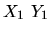
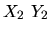
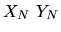
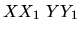
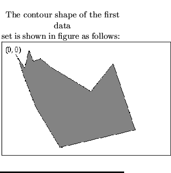
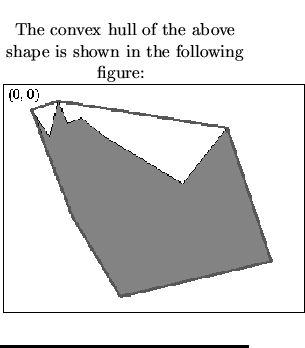

| Convex Hull Finding |
Given a single connected contour, which is either convex or non-convex
(concave), use any algorithm to find its Convex Hull, i.e., the smallest
convex contour enclosing the given shape. If the given contour is convex, then
its convex hull is the original contour itself. The maximal size of the shape
is 512 512, and the maximal number of the vertices of the shape is 512.
Write a program to read the input data (the given shapes) from a disk file,
implement your convex hull finding algorithm, and then output the shape data
of the results to the standard output.
512, and the maximal number of the vertices of the shape is 512.
Write a program to read the input data (the given shapes) from a disk file,
implement your convex hull finding algorithm, and then output the shape data
of the results to the standard output.
| Line | Data in | |
| Number | the File | Explanation |
| 1 | K | a positive integer showing how many sets of data in this file |
| 2 | N | a positive integer showing the number of vertices for the shape |
| 3 |  | two positive integers for the first vertex (X1, Y1) |
| 4 |  | two positive integers for the next neighboring vertex (X2, Y2) |
| ... | ||
| N+2 |  | two positive integers for the last vertex (XN, YN) |
| N+3 | -1 | Delimiter |
| N+4 | M | a positive integer showing the number of vertices for the next shape |
| N+5 |  | two positive integers for the first vertex |
| ... |
Note: Please note that the Line Number, Data in the File and
Explanation are not given in the file. They are shown here only to assist
you in reading the data.
3 15 30 30 50 60 60 20 70 45 86 39 112 60 200 113 250 50 300 200 130 240 76 150 47 76 36 40 33 35 30 30 -1 12 50 60 60 20 70 45 100 70 125 90 200 113 250 140 180 170 105 140 79 140 60 85 50 60 -1 6 60 20 250 140 180 170 79 140 50 60 60 20
3 8 60 20 250 50 300 200 130 240 76 150 47 76 30 30 60 20 -1 6 60 20 250 140 180 170 79 140 50 60 60 20 -1 6 60 20 250 140 180 170 79 140 50 60 60 20

